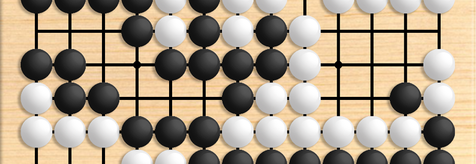

The Legends of Go
The Legends of Go is based on the longest continuously played board game named Go, where two players compete to strategically conquer the most territory. Go's ruleset is fairly simple, however the strategy behind the game is quite deep. The Legends of Go aims to incorporate the history of Go, modern AI, and RPG features to create a new experience to be played on PC.
Go Rules
Go is played by two players alternating turns placing black and white stones on the empty intersections of the board grid. The winner of the game is the player that controls the most space on the board. Stones that are connected to eachother act as a group, and stones can also be captured if they become completely surrounded, leaving no empty adjacent intersections. A more in-depth explanation of Go's ruleset can be found on the British Go Association's Website.
Go Gameplay
In the clip below, you'll see the black and white stone players taking turns walling off territory on the board. Black is able to claim the right side of the board while white has the left. At the end you'll see the territory marked with black and white dots, to show which portions of the board are owned by each player. Because black gets the advantage to play first, white gets some bonus points to offset this, but black was still able to win as a much larger portion of the board was claimed. For the sake of keeping the clip short, the 9x9 board was used, and the players are also playing at a fairly rapid pace. The typical board sizes are 9x9, 13x13, and 19x19, with 19x19 being the most commonly played.
Potential Features
- Interactive tutorial system to teach the rules and fundamentals of Go
- Integration with modern open-source Go artificial intelligence (AI) to both serve as an opponent and as assistance for the player
- RPG Campaign
- Play through a story learning the history and core fundamentals of Go from Go legends
- The player will complete various activities in order to gain experience and progress through the story
- Play Go matches against opponents for practice, tournaments, or wagers
- Complete Go problems focusing on conquering and defending territory
- In limited use, the player will be able to call upon the Go legends for assistance using the AI to suggest areas to play, suggest moves, undo moves, check the life and death status of a stone group, slow time, and more
- Auto-adjustment of the AI level to match the player's skill upon winning or losing matches
- Different difficulties to affect the initial AI level and speed in which AI level auto-adjusts
- Local Match Play
- Settings for board size, handicap, komi, time limits, AI difficulty, and more
- Any combination of human and AI players (human vs. human, human vs. AI, AI vs. AI)
- Ability to read Smart Game Format (SGF) files for Go problems and tutorials
- Localization to other languages
- Integration with Steam Achievements